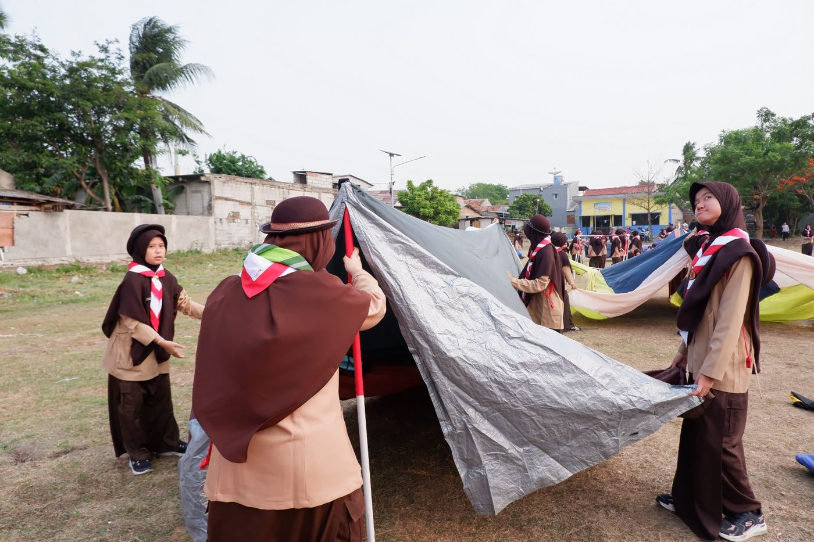
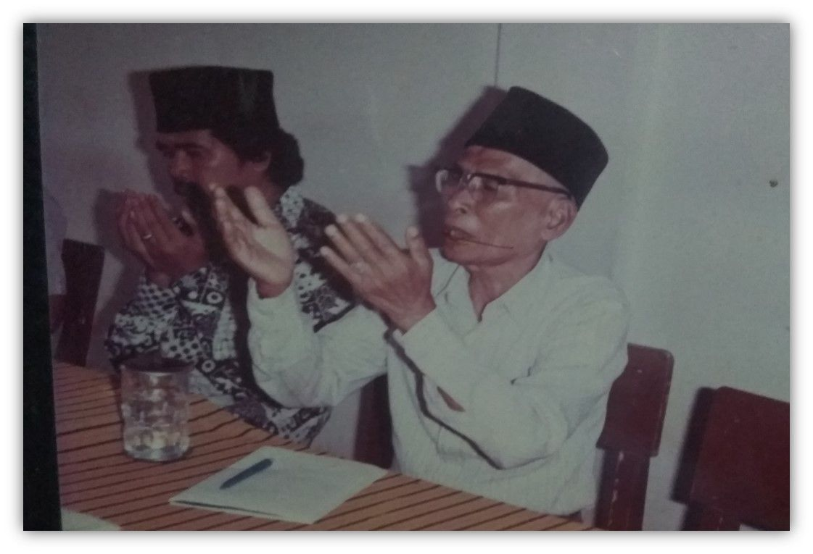
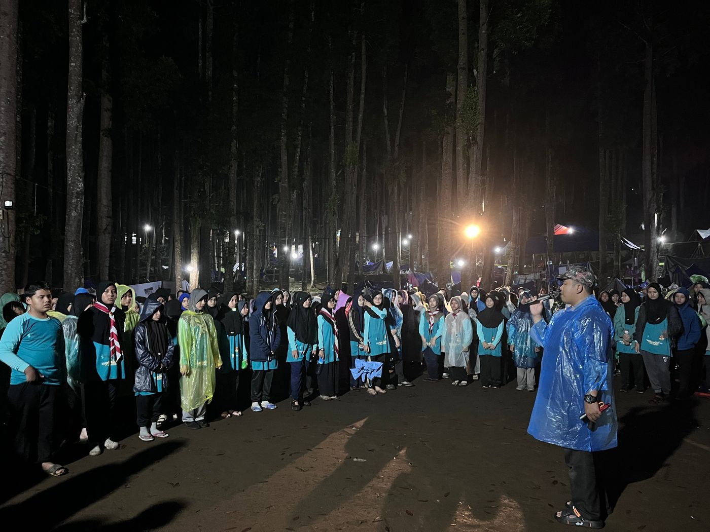
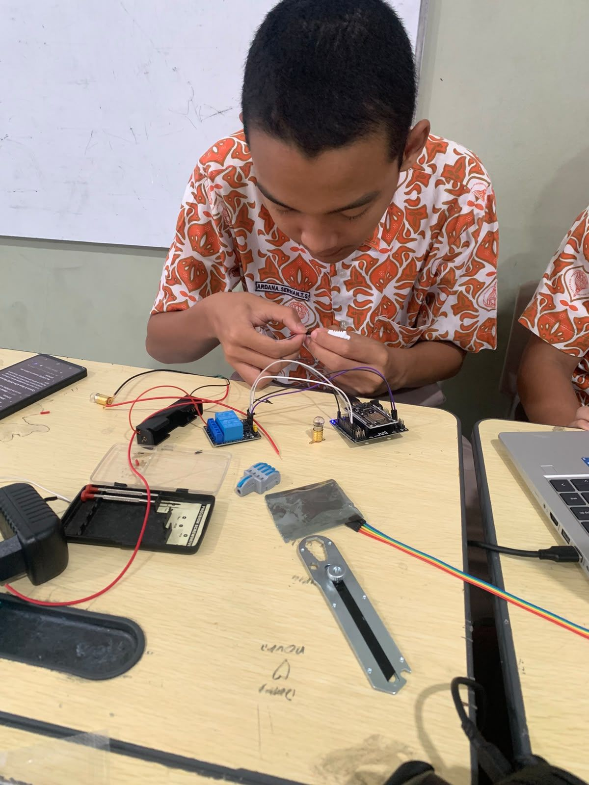

Kepramukaan

بِسْمِ اللّٰهِ الرَّحْمٰنِ الرَّحِيْمِ
Madrasah Asy-Syukriyyah lahir dari keprihatinan seorang guru akan kurangnya pendidikan agama bagi anak-anak, dan dari keikhlasan sebuah keluarga yang merelakan dapurnya menjadi ruang kelas.
Berdiri sejak 1987

Segera hadir
Daftar prestasi dan penghargaan SMPIT Asy-Syukriyyah sedang kami himpun dan akan ditampilkan di sini.



“Menjadi Sekolah Menengah Pertama Islam Yang Unggul, Modern, Dan Berwawasan Global”
Dari sejarah yang dimulai di sebuah dapur sederhana hingga fasilitas dan kegiatan siswa hari ini — kenali sekolah kami lebih dekat.
Sarana yang memadai dan modern untuk menunjang proses pendidikan yang berkualitas.